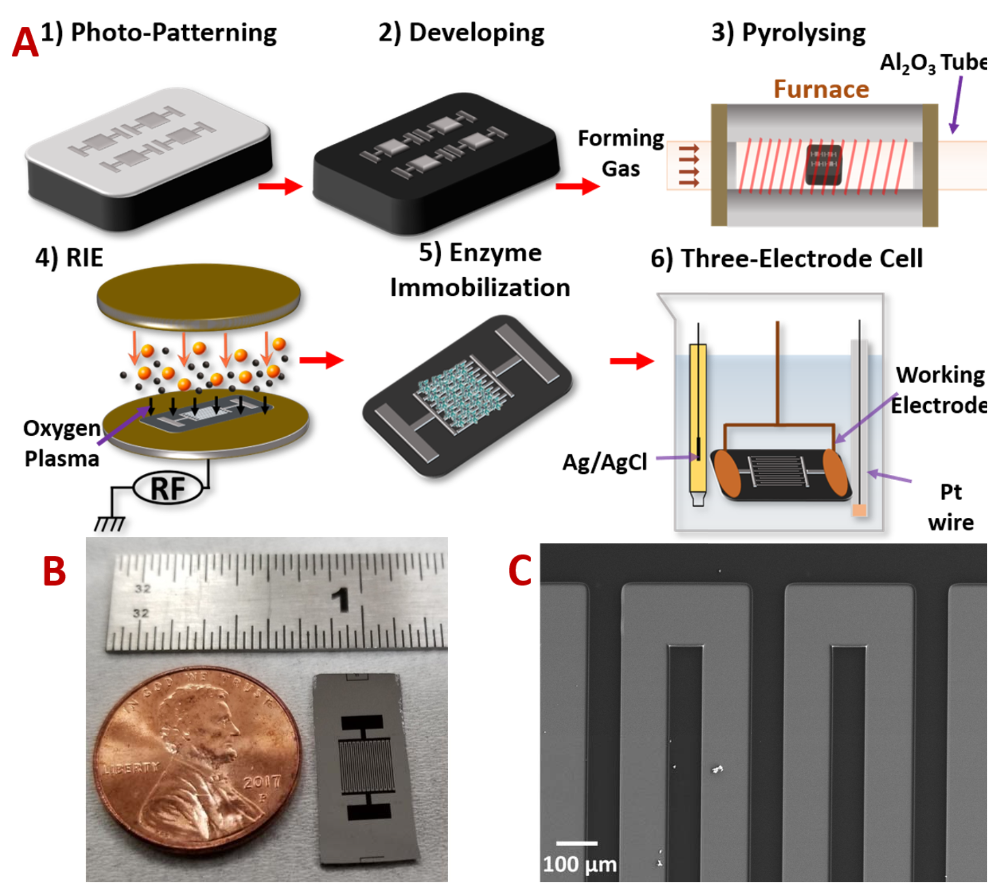
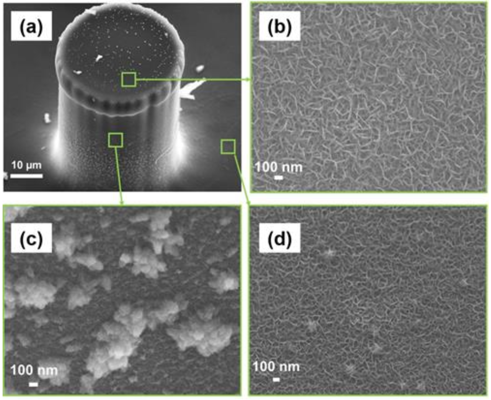
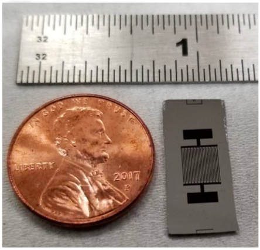

C-MEMS Training & Fabrication
Carbon Microelectromechanical Systems
Photolithography | Pyrolysis | 3D Carbon Microstructures
📍 Location: Advanced Materials Engineering Research Institute (AMERI), Florida International University
🔬 Skills Acquired: Photolithography, SU-8 Processing, Pyrolysis, SEM Characterization, Electrochemical Testing
📚 Reference: Fabricated similar structures as described in peer-reviewed publications from my research group (Adelowo et al., J. Power Sources 2020; Forouzanfar et al., Biosens. Bioelectron. 2020; Forouzanfar et al., Micromachines 2022)
Project Overview
During the first two years of my Ph.D., I underwent extensive training in Carbon Microelectromechanical Systems (C-MEMS) technology at the Advanced Materials Engineering Research Institute (AMERI) cleanroom facility. This training covered the entire fabrication process flow from photolithographic patterning of SU-8 photoresist to high-temperature pyrolysis for creating glassy carbon microstructures. I successfully fabricated 3D carbon microelectrode arrays, interdigital carbon structures, and carbon micropillars for applications in energy storage (microsupercapacitors, lithium-ion capacitors) and biosensing (aptasensors, enzymatic sensors).
What is C-MEMS?
C-MEMS is a fabrication technique that converts photopatterned SU-8 photoresist into glassy carbon structures through pyrolysis in an oxygen-free environment at high temperatures (800-1100°C). This technology enables the creation of high-aspect-ratio 3D carbon microstructures with excellent electrical conductivity, chemical inertness, biocompatibility, and wide electrochemical windows—making them ideal for on-chip energy storage and biosensing applications.
Key Skills & Techniques Acquired
C-MEMS Fabrication Process Flow
Step 1: Substrate Preparation
4-inch silicon wafer (p-doped, single-side polished) cleaned with acetone and methanol, followed by 20 min bake at 200°C to remove moisture and solvents.
Step 2: SU-8 Spin Coating
SU-8 25 (for thin layer ~15μm): Spin-coated at 3000 rpm for 30 seconds
SU-8 100 (for thick layer ~100μm): Spin-coated at 2000 rpm for 30 seconds (for 3D micropillars)
Step 3: Soft Bake
65°C for 3-10 min (depending on layer thickness), then 95°C for 7-30 min on hotplates to evaporate solvents.
Step 4: UV Exposure (Photolithography)
OAI mask aligner used for pattern transfer. Exposure dose optimized: 300 mJ/cm² for SU-8 25, 700 mJ/cm² for SU-8 100.
Step 5: Post-Exposure Bake (PEB)
65°C for 1-3 min, then 95°C for 5-10 min to crosslink exposed regions.
Step 6: Development
SU-8 developer solution to remove unexposed photoresist, revealing 2D interdigital patterns or 3D micropillar structures.
Step 7: Pyrolysis (Carbonization)
Lindberg tube furnace with forming gas flow (95% N₂ + 5% H₂, 200 sccm).
Temperature Ramp: 3-5°C/min to 350°C (30 min dwell), then to 900°C (60 min dwell).
Cooling: Natural cooling to room temperature in inert atmosphere.
Step 8: Optional Post-Processing
Oxygen Plasma Treatment (RIE): 60 sccm O₂, 400 mTorr, 100 W, 7 min – introduces carboxyl (-COOH) groups for biofunctionalization.
Bipolar Exfoliation (BPE): 45V DC for 24 hours – deposits vertically aligned reduced graphene oxide (rGO) on C-MEMS electrodes.


Structures I Fabricated During Training
1. 2D Interdigital Carbon Microelectrodes
- Finger width: 79 μm
- Finger spacing: 100 μm
- Number of fingers: 20 (10 per side)
- Total footprint: ~0.29 cm²
- Applications: Supercapacitors, electrochemical sensors
2. 3D Carbon Micropillar Arrays
- Micropillar diameter: ~46 μm
- Micropillar height: ~100-106 μm
- 23 pillars per finger (460 pillars total per device)
- Applications: High-surface-area electrodes for batteries and supercapacitors
3. Carbon Microelectrodes with BPE-rGO Integration
- Vertically aligned reduced graphene oxide deposited via bipolar electrochemistry
- Porous morphology with ~100 nm pore size
- Enhanced areal capacitance (from 7.67 to 19.89 mF/cm²)
- Applications: Cancer biomarker aptasensors (PDGF-BB detection)


Applications Explored During Training
Energy Storage
- On-chip Lithium-ion Capacitors (LIC): 3D carbon microelectrodes as capacitor-type electrode, LiFePO₄ integrated via electrophoretic deposition (EPD) as battery-type cathode. Achieved areal energy density ~5.03 μWh/cm² (5× higher than symmetric carbon ECs).
- Microsupercapacitors: Oxygen plasma treatment to improve capacitive properties (9× increase in CV area).
Biosensing
- Cancer Biomarker Aptasensors (PDGF-BB): Covalent immobilization of amino-terminated aptamers on carboxyl-functionalized C-MEMS surfaces. Achieved LoD of 0.75 pM with BPE-rGO integration.
- Lactic Acid Enzymatic Sensors: Lactate oxidase immobilization for non-invasive lactate detection in sweat. Achieved wide linear range (0.1-5000 μM) and LoD of 1.45 μM.
Equipment & Tools Used
- Spin Coater (Headway Research)
- OAI Model 800 Mask Aligner
- Hotplates (for soft/post-exposure bakes)
- Lindberg Tube Furnace (pyrolysis)
- MARCH CS-1217 RIE System (oxygen plasma)
- JEOL SEM 6330F (microstructure characterization)
- JASCO FTIR 4100 (surface functional groups)
- Bio-Logic VMP3 Potentiostat (electrochemical testing)
- Agilent Technologies N6705A DC Power Analyzer (BPE)
Why C-MEMS for Microfabrication?
| Property | C-MEMS (Glassy Carbon) | Conventional Silicon |
|---|---|---|
| Biocompatibility | ✅ Excellent | ⚠️ Moderate |
| Chemical Inertness | ✅ High | ⚠️ Moderate |
| Electrochemical Window | ✅ Wide | ⚠️ Limited |
| Biofouling Resistance | ✅ High | ⚠️ Low |
| Surface Functionalization | ✅ Accessible (-COOH, -NH₂) | ⚠️ Requires oxide layer |
| 3D High-Aspect-Ratio | ✅ Yes (C-MEMS) | ✅ Yes (DRIE) |
| Fabrication Cost | ✅ Low (photoresist + furnace) | ⚠️ Higher (DRIE expensive) |
Reference Publications (Group Peers)
- Adelowo et al. - On-chip Lithium-ion Capacitor (J. Power Sources 2020)
- Forouzanfar et al. - PDGF-BB Aptasensor (Biosens. Bioelectron. 2020)
- Forouzanfar et al. - C-MEMS with BPE-rGO (Micromachines 2022)
- Forouzanfar et al. - Lactic Acid Biosensor (IEEE Sensors J. 2020)
Training Timeline
- Fall 2019: Introduction to cleanroom protocols, photolithography fundamentals, SU-8 processing basics
- Spring 2020: Mask design (LayoutEditor), UV exposure optimization, development parameters
- Summer 2020: Pyrolysis process optimization (temperature ramps, atmosphere control), SEM characterization
- Fall 2020: 2D interdigital electrode fabrication, electrochemical testing (CV, EIS)
- Spring 2021: 3D micropillar arrays, oxygen plasma functionalization, biosensor integration
- Summer 2021: Bipolar exfoliation of graphene, integration with C-MEMS for enhanced performance
Connection to My Research
The C-MEMS training directly enabled my subsequent research in:
- Microsupercapacitors: Using porous carbon structures for on-chip energy storage (training reference)
- Sensor Integration: Understanding electrode fabrication for my pressure sensor work
- Cleanroom Protocols: Mastering the same facilities used for my MEMS pressure sensor project
- Electrochemical Characterization: Skills applied to supercapacitive pressure sensor testing
Conclusion
This comprehensive C-MEMS training provided me with hands-on experience in photolithography, SU-8 processing, pyrolysis, and electrochemical characterization. I successfully fabricated 2D interdigital carbon microelectrodes and 3D micropillar arrays, and integrated bipolar-exfoliated graphene for enhanced performance. These skills form the foundation of my micro/nanofabrication expertise and have been directly applied to my MEMS pressure sensor and wearable sensor projects. Although I do not have first-author publications in this specific area, I am competent in all C-MEMS fabrication processes and have reproduced similar structures during my training.